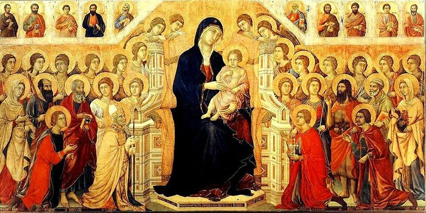
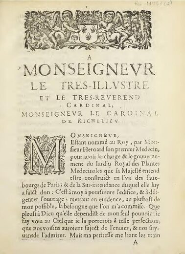
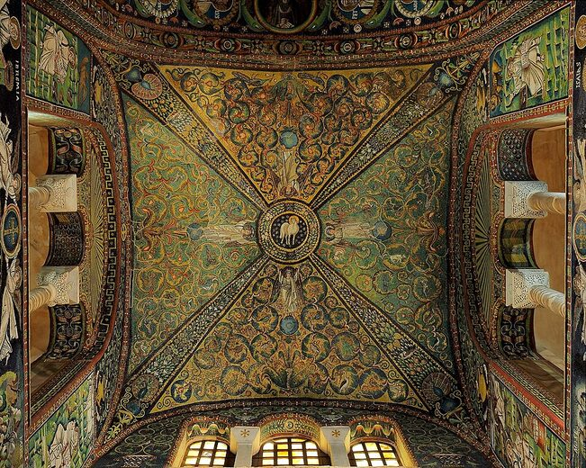

Lamentação sobre Cristo Morto
Giotto inaugura a transição do medieval ao proto-renascentista ao humanizar o gesto e o peso corporal das figuras. A obra abre a exposição mostrando como o sagrado já começa a ser vivido em termos terrenos.
Sala I
Arte Medieval e a Tradição do Ícone
Do gesto simbólico à primeira humanização do corpo sagrado.
Giotto inaugura a transição do medieval ao proto-renascentista ao humanizar o gesto e o peso corporal das figuras. A obra abre a exposição mostrando como o sagrado já começa a ser vivido em termos terrenos.

A Maestà sintetiza a tradição íconica medieval: fundo dourado, hierarquia sagrada e função litúrgica. Ancora o setor na estética do Trecento senense.

O manuscrito iluminado une devoção, calendário e refinamento cortesão. Revela o gótico internacional em sua fase tardia.

Van Eyck encerra a sala medieval com o virtuosismo flamengo: óleo, minúcia e profundidade espacial, passagem direta ao Renascimento.
Próxima sala